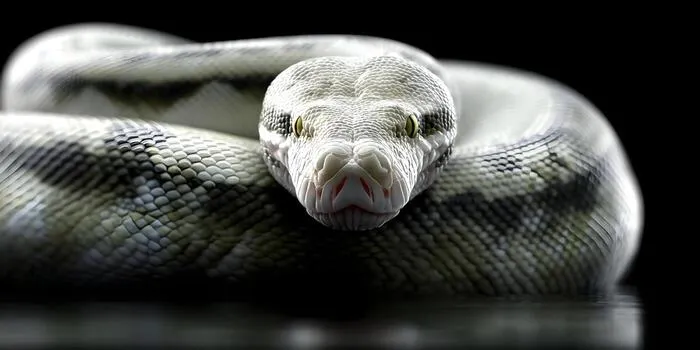

About Pythons

Pythons are nonvenomous snakes found naturally in parts of Africa, Asia, and Australia. There are many different species, so their size can vary a lot. Some are relatively small while others can grow to huge sizes.
How They Hunt
Instead of venom, pythons are constrictors. They grab prey with their mouth and wrap their body around it. This makes them very different from a snake like the black mamba.
Quick Facts
- Pythons are nonvenomous.
- They kill prey through constriction.
- Different python species can vary greatly in size.
- They are naturally found in Africa, Asia, and Australia.